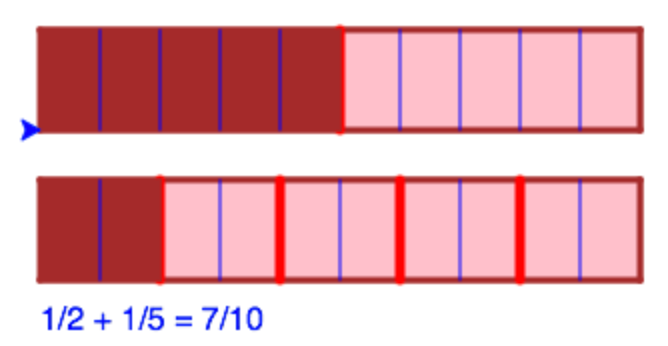
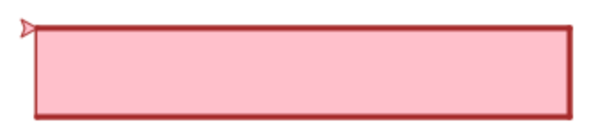
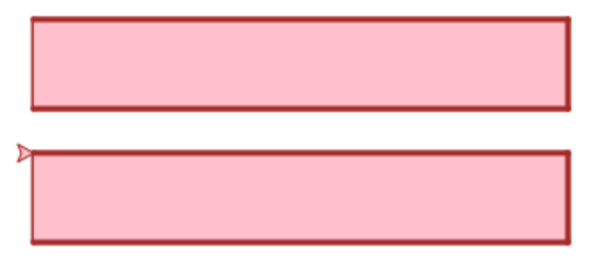
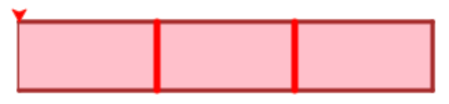
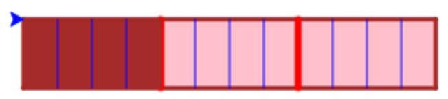
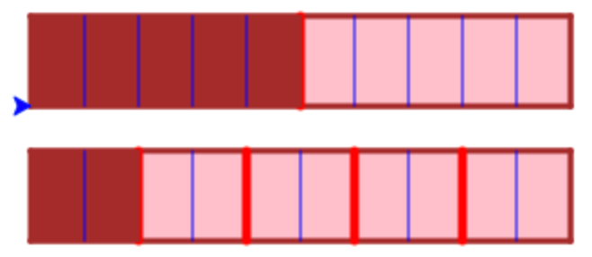
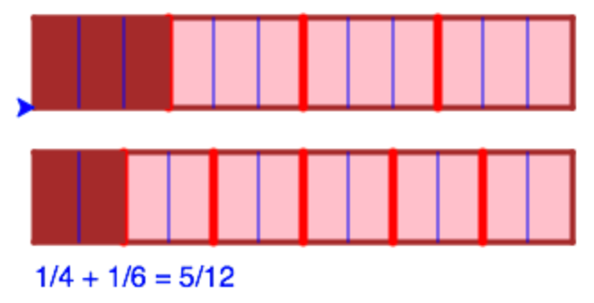

Piece of cake
medel, sköldpaddsgrafik, Scala, bråkräkning- A: Tredjedelar och fjärdedelar
- B: Godtyckliga tårtbitar
- C: Snitta tårtorna smartare
- D: Extra. Bygg ut programmet

Denna uppgift går ut på att illustrera heltalsbråk som delar av tårtor.
Innan du gör uppgiften bör du ha lite koll på “turtle graphics”, t.ex. genom att göra uppgiften Turtle.
Koden i denna uppgift är provkörd på http://kojojs.kogics.net (Scala).
A: Tredjedelar och fjärdedelar
A.1 Rita en tårta
Rita en avlång rektangulär tårta med “turtle graphics”. Kanten på tårtan skall vara i en färg och den skall vara fylld med en annan färg. T.ex.:

Klistra in följande funktioner i ditt script för att kunna hoppa till en given plats och för kunna att rita en fylld rektangel:
// Jump to a position without drawing anything
def jumpTo(x: Int, y: Int) = {
setPosition(x,y);
}
// Draw a rectangle
def drawRect(width:Int, height:Int) = {
forward(width)
right(90)
forward(height)
right(90)
forward(width)
right(90)
forward(height)
right(90)
}
Tips: Så här kan du sätta pennbredden, pennfärgen, och fyllningsfärgen:
setPenThickness(3) // Sätt bredden på pennan
setPenColor(green) // Sätt färgen på pennan
setFillColor(red) // Sätt fyllningsfärgen
Och så här kan du sätta riktningen på sköldpaddan:
setHeading(0) // Sätt riktningen till 0 grader (dvs mot öster)
Uppdrag: Rita tårtan!
Prova med olika färger, t.ex. blue, violet, pink, gold, orange, brown, red, green, white, black.
Prova att placera tårtan på olika ställen genom att anropa jumpTo innan du anropar drawRect
A.2 Rita två tårtor
Uppdrag: Rita två tårtor snyggt placerade bredvid varann. Tårtorna skall vara lika stora. T.ex. så här:

A.3 Extra: snygga till tårtorna
Uppdrag: Om du tycker om snygga tårtor, skriv kod som dekorerar dem. Kanske med en ros i mitten på varje tårta?
A.4 Skär upp tårtorna
Nu ska vi skära upp tårtorna.
Till din hjälp, klistra in följande kod i ditt script.
// Helper function for coding repetition
def repeat(n: Int)(f: => Unit) {
if (n > 0) {
f
repeat(n-1)(f)
}
}
// Slice a rectangle in a number of pieces
def sliceRect(width:Double, height:Double, pieces:Int) = {
val pieceWidth = width/pieces
repeat (pieces-1) {
hop(pieceWidth)
right(90)
forward(height)
hop(-height)
left(90)
}
hop(-(pieceWidth)*(pieces-1)) // hop back to initial position
}
Funktionen sliceRect skär upp en rektangel i ett antal lika stora bitar genom att rita streck över rektangeln.
Uppdrag: Skär upp översta tårtan i tredjedelar och nedersta tårtan i fjärdedelar. Använd en annan färg till snitten än du hade tidigare. Den tredelade tårtan borde se ut ungefär så här:

Obs! Du måste hoppa till rätt ställe innan du anropar sliceRect, och du måste anropa den med samma bredd och höjd som du ritade rektanglarna med tidigare.
Tips: Går det långsamt att rita? Du kan ställa in hastigheten på paddan så här:
setAnimationDelay(0) // Rita så fort som möjligt
A.5 Lägg till konstanter
Du använder nu troligen samma värden för position, bredd och höjd på flera ställen i ditt program. Då blir koden svårläst. Det blir också jobbigt att t.ex. flytta en tårta eftersom du måste ändra värdena på flera ställen i ditt program.
Det vore enklare om du hade namn på dessa värden, t.ex. cake1pos, cake2pos, cakewidth, cakeheight, så slipper du skriva numeriska värden på många ställen i programmet.
Börja med att lägga till en funktion som gör det möjligt att hoppa till en position som är sparad som ett par av koordinater:
// Jump to a position given as a pair of coordinates
def jumpToPos(pos:(Int, Int)) = {
val (x,y) = pos
setPosition(x,y)
}
Inför sedan konstanter för dina värden, t.ex.
val cake1pos = (-50, 75)
val cake2pos = (-50, 0)
val cakewidth = 300
val cakeheight = 50
Uppdrag: Inför konstanter för tårtpositioner och bredd och höjd på tårtorna. Ändra dina anrop så de använder konstanterna i stället för numeriska värden. Prova att ändra konstanterna och kontrollera att ditt program fortfarande fungerar.
A.6 Ät tårta
Nu skall vi illustrera att du äter en bit av den ena tårtan och en bit av den andra.
Uppdrag: Färga tårtbiten längst till vänster på vardera tårtan. Resultatet borde bli ungefär så här för den tredelade tårtan:
Tips: Anropa drawRect med en tredjedel av bredden för den första tårtan och en fjärdedel av bredden för den andra tårtan. Till exempel så här:
drawRect(cakewidth/3, cakeheight)
A.7 Hur mycket har du ätit?
Nu har du ju ätit 1/3 tårta plus 1/4 tårta. Hur mycket tårta blir det sammanlagt?
Om vi hade delat varje tårta i tolftedelar (delbart med både 3 och 4), så hade vi lätt kunnat se hur mycket tårta det blir.
Nu skall vi illustrera detta. Till din hjälp, klistra in följande funktion:
// Slice each piece into a number of slices
def slicePieces(width:Double, height:Double, pieces:Int, slices:Int) = {
val pieceWidth = width/pieces
repeat (pieces) {
sliceRect(pieceWidth, height, slices)
hop(pieceWidth)
}
hop(-(pieceWidth)*(pieces))
}
Denna funktion skär upp en tårta som redan är delad i pieces bitar, så att varje bit delas ytterligare i slices delar.
Uppdrag: Skär upp de båda tårtorna i tolftedelar.
Tips: Anropa slicePieces så du skär upp bitarna i den tredelade tårtan i fjärdedelar och bitarna i den fyra-delade tårtan i tredjedelar. Den tredelade tårtan borde nu se ut så här:

Quiz: Hur många tolftedelar tårta är uppätna totalt?
Svar
7
B: Godtyckliga tårtbitar
B.1 Generalisera programmet
Ditt program illustrerar hur
1 1 7
––– + ––– = ––––
3 4 12
Vi skall nu generalisera programmet så att du kan prova med andra bråk.
Tips: Spara en kopia av ditt fungerande program innan du börjar ändra något.
Uppdrag: Kapsla in koden för att rita, dela, äta, och skära tårtorna i en ny funktion showFractionAdd(n,m) så att du kan anropa den för att illustrera ekvationen:
1 1 n+m
––– + ––– = ––––-
n m n*m
Om du t.ex. anropar showFractionAdd(2,5) så skall du få följande resultat:

Tips: Börja med att lägga in din kod i den nya funktionen, och kolla att den fungerar när du anropar den med showFractionAdd(3,4). Generalisera sedan funktionen så att den använder parametrarna n och m i stället för 3 och 4.
B.2 Skriv ut ekvationen
Uppdrag: Utöka koden i showFractionAdd så att den skriver ut ekvationen under tårtorna. När du nu anropar showFractionAdd(2,5) så skall du få följande resultat:
Tips: Här är lite kod du kan använda för att skriva ut ekvationen:
val s1 = "1/"+n.toString
val s2 = "1/"+m.toString
val s3 = (n+m).toString + "/" + (n*m).toString
val s4 = s1 + " + " + s2 + " = " + s3
write(s4)
Förklaring av koden: Plustecknet ovan sätter ihop strängar (snarare än att addera tal). Ett tal som skall skrivas ut, t.ex., n behöver då först göras om till en sträng, vilket görs med standardfunktionen toString.
B.3 Testa olika tårtbitar
Prova din funktion med olika värden på n och m för att räkna ut 1/n + 1/m. Kontrollera t.ex. att
- 1/2 + 1/5 = 7/10
Uppdrag: Prova fler exempel. T.ex.:
- 1/3 + 1/4 = 7/12
- 1/5 + 1/7 = 12/35
Fungerar programmet bra för alla exempel? Vilka exempel kan du komma på som verkar intressanta att testa?
Tips
Låt n eller m vara lika med 1 eller 0 eller negativt. Prova med större värden. Prova med värden som har gemensamma faktorer, t.ex. 2 och 4.
Fungerade programmet bra för alla exemplen? Kanske det kan förbättras?
C: Snitta tårtorna smartare
Hur hanterar ditt program fallet med n=2 och m=4? Skärs tårtorna upp med onödigt många snitt? För detta exempel borde det räcka att snitta tårtorna i fjärdedelar. Men ditt program kanske snittar dem i åttondelar?
Kan du räkna ut det smartaste sättet att snitta tårtorna (fjärdedelar i detta fall)?
Tips
Vi behöver hitta det minsta talet som går att dela med både n och m. Det kan vi göra genom att först hitta det största talet d som både n och m kan delas med. Det kallas den största gemensamma delaren till n och m, och motsvarar alla de onödiga snitten. Vi behöver inte snitta tårtorna n*m gånger. Det räcker med (n*m)/d gånger.
C.1 Räkna ut största gemensamma delaren
Det finns flera olika sätt att räkna ut största gemensamma delaren till två tal. Här är Euclides ursprungliga algoritm:
// Compute greatest common divisor
def gcd(aIn:Int, bIn:Int):Int = {
var a = aIn
var b = bIn
while (a != b) {
if (a > b)
a = a - b
else
b = b - a
}
return a
}
Uppdrag: Klistra in koden ovan för gcd-funktionen (Greatest Common Divisor) och kontrollera att den fungerar på några exempel, t.ex.:
-
write(gcd(2,4).toString)borde ge2 -
write(gcd(15,6).toString)borde ge3
Kommentar om gcd-algoritmen
gcd-algoritmen ovan fungerar bara för positiva tal. Fler algoritmer diskuteras på wikipedia-sidan Euclidean algorithm.
C.2 Skär tårtorna smartare
Uppdrag: Ändra ditt program så att gcd används för att skära tårtorna med så få snitt som möjligt.
T.ex. borde du kunna få följande resultat:

Testa fler exempel, t.ex. att:
-
1/2 + 1/4 = 3/4(i stället för6/8) -
1/6 + 1/15 = 7/30(i stället för21/90)
Kommer du inte på hur du skall göra?
Tips
Som vi nämnde tidigare så behöver tårtorna bara snittas (n*m)/d gånger. För tårtan med n bitar behöver vi alltså skära varje bit i m/d skivor. Och för tårtan med m bitar behöver vi skära varje bit i n/d skivor. Båda dessa tal kommer att vara heltal eftersom både m och n kan delas jämnt med d.
D: Extra. Bygg ut programmet
Hur skulle du kunna förbättra och utöka programmet? Kanske:
- äta mer än en bit från varje tårta
- ha fler än två tårtor
- illustrera subtraktion mellan bråk
- rita cirkulära tårtor i stället för rektangulära
- …
Du kan också gå vidare med uppdraget Bråkspel som också handlar om bråk, och där du får göra ett spel.